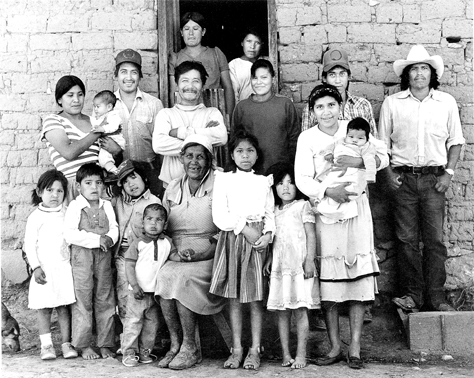

Son el menor grupo indígena del estado, sus principales asentamientos se encuentran en Temósachi, en algunas comunidades como El kipor, La Dura, en el municipio de Maicoba estado de Sonora, se denominan como O'odham para diferenciarlos de los pimas Tohono O'odham habitantes del estado estadounidense de Arizona. Se diferencian principalmente en la variante que de su lengua.
